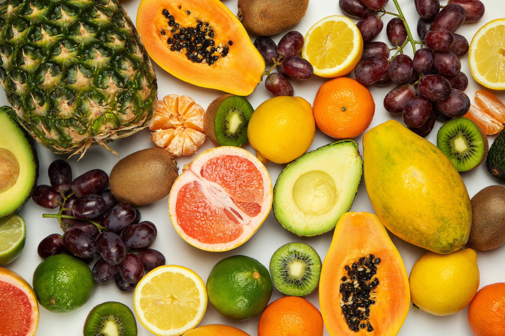
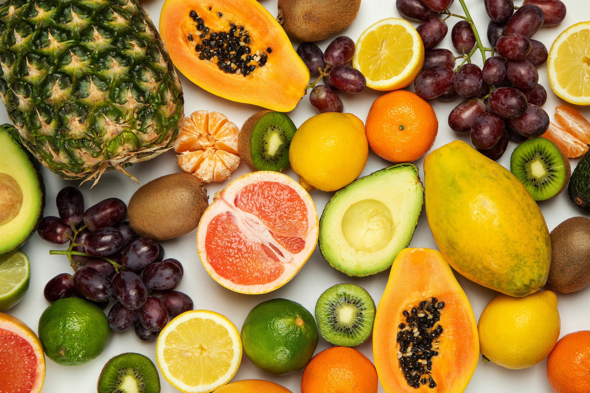

CLASSES OF FOOD
Protein
Proteins are fundamental biological molecules composed of amino acids, and they play crucial roles in nearly every aspect of living organisms. Here are some key points about proteins: 1. Structure: Proteins are made up of long chains of amino acids linked together by peptide bonds. The sequence of amino acids determines the protein's unique structure and function. 2. Functions: Proteins have diverse functions, serving as enzymes, structural components, antibodies, transporters, and more. Enzymes, for instance, catalyze chemical reactions in cells, while structural proteins provide support to cells and tissues. 3. Enzymes: Enzymes are a subset of proteins that act as biological catalysts, speeding up chemical reactions in cells. They are essential for processes like digestion, DNA replication, and metabolism. 4. Amino Acids: There are 20 different amino acids that can be combined to form proteins. The sequence and arrangement of these amino acids determine the protein's 3D structure and, consequently, its function.
- Eggs
- Beans
- Chicken
- Fish
- Whey


Vitamin
Vitamins are essential organic compounds that our bodies require in small amounts to function properly. They play various critical roles in metabolism, growth, and overall health. Here's an overview of some important vitamins and the foods where they can be found: 1. *Vitamin A:* This vitamin is crucial for vision, immune function, and skin health. You can find vitamin A in foods like carrots, sweet potatoes, spinach, kale, and liver. 2. *Vitamin C:* Known for its role in boosting the immune system and collagen production, vitamin C is abundant in citrus fruits (oranges, lemons), strawberries, bell peppers, and broccoli. 3. *Vitamin D:* Vitamin D is essential for bone health and immune system support. It can be obtained through sunlight exposure, as well as from foods like fatty fish (salmon, mackerel), fortified dairy products, and egg yolks.
- Broccoli
- Papaya
- Melon
- Papaya
- Peaches


Minerals
Minerals are inorganic nutrients essential for various physiological functions in the human body. They are categorized into two groups: macrominerals, which are required in larger amounts, and microminerals (trace minerals), which are needed in smaller quantities. Here's an overview of some important minerals and the foods where they can be found: *Macrominerals:* 1. *Calcium:* Vital for bone and teeth health, calcium is found in dairy products like milk, yogurt, and cheese. It's also present in leafy greens (such as kale and collard greens) and fortified plant-based milk alternatives. 2. *Magnesium:* This mineral is involved in muscle and nerve function, as well as bone health. Magnesium-rich foods include nuts (almonds, cashews), seeds (pumpkin seeds, sunflower seeds), and whole grains. 3. *Potassium:* Essential for heart and muscle function, potassium is abundant in bananas, oranges, potatoes, spinach, and beans.
- nuts
- A nut is a fruit consisting of a hard or tough nutshell protecting a knerel which is usually edible
- fruits
- Helps in building the immune system
- vegetables
- Strengthens the body system
 
